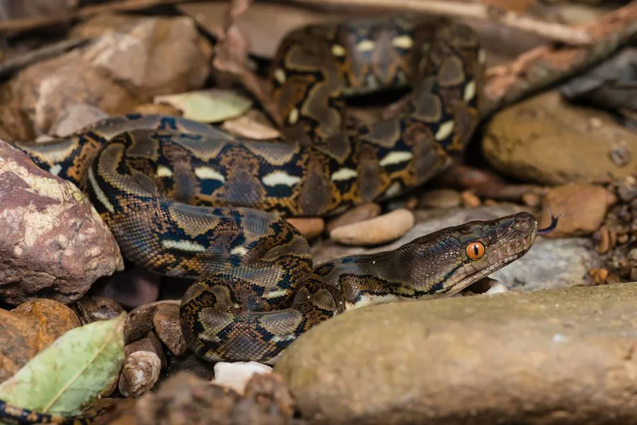

爬行动物 · 动物界
网纹蟒 Malayopython reticulatus

世界上最长的蛇类，体长可超过 6 米，身上的网纹状花纹极醒目，分布于东南亚的雨林与湿地，也是宠物蟒贸易中的常见物种。
- 分类
- 门脊索动物门纲爬行纲目有鳞目科蟒科属网纹蟒属
- 栖息环境
- 东南亚的热带雨林、沼泽、河岸与农田边缘
- 地理分布
- 东南亚的缅甸、泰国、越南、马来西亚、印度尼西亚等地
- 保护级别
- IUCN 无危（LC）；CITES 附录 II；非中国原产
物种志
网纹蟒体长通常 4–6 米，最长记录超过 6 米，是世界上体型最长的蛇类，雌性大于雄性，体重可达 75 千克。它体色以黄褐或灰褐为底，背部和两侧布满黑色的菱形与不规则斑块，斑块边缘镶黄色或白色细纹，形成网状的复杂花纹，“网纹蟒”之名由此而来。
它分布于东南亚的雨林、沼泽、河岸和农田附近，善于游泳，多在夜间活动，捕食鼠类、野猪、鹿、猴和鸟类，靠缠绕将猎物绞杀后整只吞下。雌蟒每窝产卵约 20–80 枚，盘在卵上孵卵，孵化期约 60–90 天。它因皮革、肉用和宠物贸易被大量捕捉，野生种群数量下降；在中国它属于外来物种，饲养的宠物个体不可随意放生。
形态与习性
- 食性鼠类、野猪、鹿、猴和鸟类
- 体长通常 4–6 m，最长记录超过 6 m
- 体重可达 75 kg
- 寿命约 20–25 年
- 繁殖卵生，每窝 20–80 枚，孵化 60–90 天
- 活动节律夜行性，善游泳
- 特征网状黑色花纹，是世界上最长的蛇类
趣味知识
- 网纹蟒是世界上最长的蛇类，最大个体记录超过 6 米。
- 它的花纹像一张复杂的网，在落叶层和树影中具有隐蔽作用。
- 网纹蟒善游泳，能横渡较宽的河流寻找猎物。